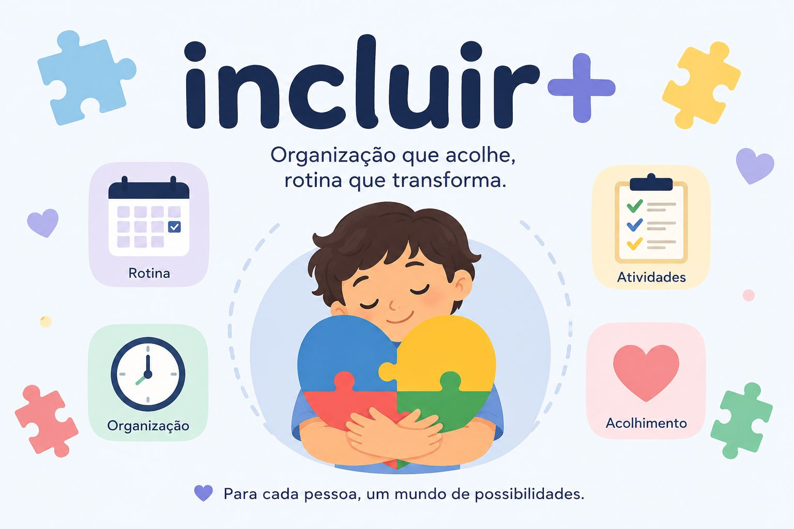

Organização
Estrutura tarefas e compromissos em um só lugar, com menos confusão.
Rotina inteligente
O Incluir+ ajuda a estruturar atividades, horários e compromissos de forma clara e personalizada, promovendo previsibilidade e autonomia.

O Incluir+ é uma agenda virtual inclusiva desenvolvida para auxiliar na organização da rotina de crianças com TEA e outras deficiências. A plataforma permite organizar horários, atividades e compromissos de forma simples, visual e personalizada, contribuindo para uma rotina mais previsível e para o desenvolvimento da autonomia.
Estrutura tarefas e compromissos em um só lugar, com menos confusão.
Cria rotinas mais claras e tranquilas para o dia a dia da família.
Ajuda na construção de hábitos e na participação ativa da criança.